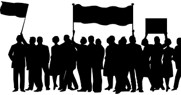

Como No período nomeado liberalismo, época da Declaração dos Direitos do Homem (1789), a propriedade estava firmada como direito supremo, segundo Maria da Glória Gohn. Logo, surgiu o sujeito politico burguês, com direito à liberdade e à plena cidadania.

Pensava-se na ideia de que a classe trabalhadora estava acostumada com o arado e a enxada, usando apenas as mãos, e não a cabeça. Nessa lógica, defendia-se que os assalariados seriam incapazes de pensar, portanto, não poderiam ser reconhecidos como cidadãos políticos, capazes de agir com racionalidade.
Segundo a socióloga e educadora Maria da Glória Gohn, observa-se que a noção de cidadania passa a se descaracterizar de sua concepção original clássica, negan- do-a, na medida em que ela se reduz a ver o processo educativo para a cooperação ao bem comum. Tal noção passa a ter uma conotação eminentemente moral, de disciplinamento para o convivio social harmônico com seus cidadãos semelhantes.
É nesse sentido que principia a alteração de cenário que marca o século XIX, em que a cidadania passa a se dirigir a todos, diferente dos séculos anteriores, em que pertencia apenas à burguesia. Todavia, nesse momento, ela se dirige às massas para discipliná-la, domesticá-la. Os direitos sociais não são conquistados, mas outorgados pelo Estado.
 Acesse a imagem
Acesse a imagem
O caráter explorador e espoliativo do capitalismo, a massificação das relações sociais, o descompasso entre o alto desenvolvimento tecnológico e a miséria social de milhões de pessoas, as frustrações com os resultados do consumo insaciável de bens e produtos, o desrespeito à dignidade humana de algumas categorias socials são elementos que ajudam a constituir um novo ator, agente da mobilização e das pressões: os movimentos sociais.
 Acesse a imagem
Acesse a imagem
Baseado em interesses da coletividade, os movimentos sociais populares constituíram-se formas inovadoras de educação popular. Não se deram com base em um programa preestabelecido, mas por meio de príncipios que fundamentaram a educação popular. Alguns nasceram no interior de igrejas, dos partidos políticos e das universidades.
Mas é importante destacar que não existe movimento social puro, isolado, formado apenas de participantes populares de base. Sempre há a presença de elementos externos ao grupo demandatório. O princípio básico da educação popular foi o do desenvolvimento de uma ação conscientizadora, que atuou sobre o nível cultural das camadas populares em termos explicitos dos interesses delas.

Nesse período, muitos movimentos se transformaram em ONGs ou se incorporaram a ONGs que já os apoiavam. A lógica de organização desses projetos e programas passou a ser propositiva, e não reinvindicatória. A atuação por meio de projetos exige resultados e tem prazos.